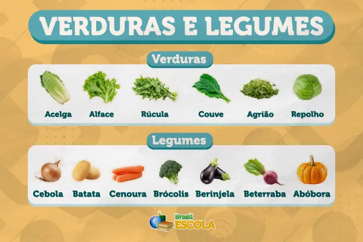

Legumes
Uma alimentação saudável é essencial para manter o bom funcionamento do corpo e da mente. Consumir alimentos naturais e equilibrados ajuda a prevenir doenças, melhora a disposição no dia a dia e contribui para uma melhor qualidade de vida. Além disso, uma boa alimentação fortalece o sistema imunológico e auxilia no crescimento e desenvolvimento do organismo.
Exemplos:
- Cenoura
- Batata
- Abobrinha
- Beterraba
- Chuchu

Verduras
Os legumes são ricos em vitaminas, minerais e fibras que ajudam no bom funcionamento do organismo. Eles são importantes para a digestão e contribuem para a prevenção de diversas doenças.
Exemplos:
- Alface
- Couve
- Espinafre
- Rúcula
- Acelga
Proteínas
As verduras são essenciais para uma alimentação equilibrada, pois possuem poucas calorias e muitos nutrientes. Elas ajudam na digestão e fortalecem o sistema imunológico
Exemplos:
- Carne
- Frango
- Ovos
- Peixe
- Feijão

Frutas
As proteínas são fundamentais para o crescimento e a recuperação dos tecidos do corpo. Elas ajudam na formação dos músculos e são essenciais para a saúde em geral.
Exemplos:
- Maçã
- Banana
- Laranja
- Morango
- Manga

Industrializados / Embutidos
Os alimentos industrializados e embutidos devem ser consumidos com moderação, pois geralmente possuem altos níveis de sódio, açúcar e conservantes, que podem prejudicar a saúde quando consumidos em excesso.
Exemplos:
- Salsicha
- Presunto
- Refrigerante
- Salgadinho
- Macarrão instantâneo